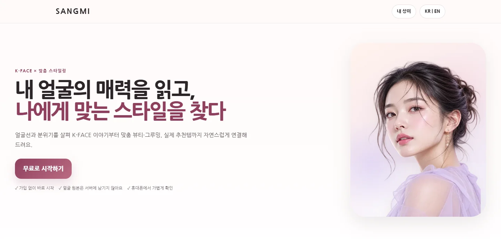
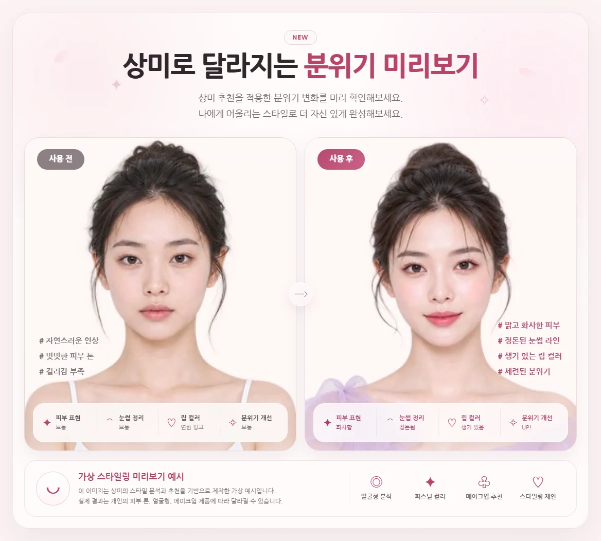
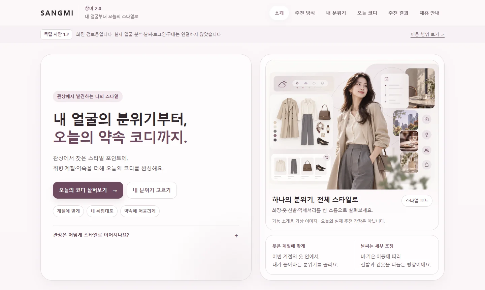
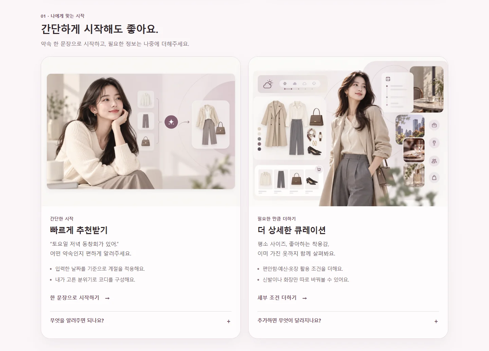
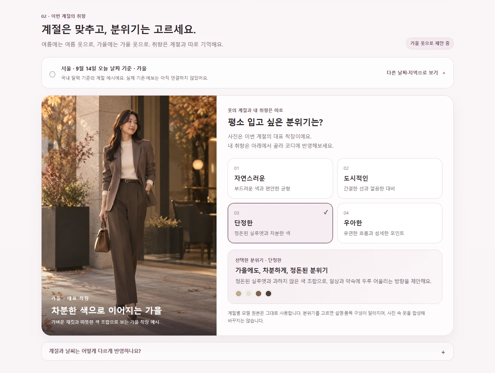
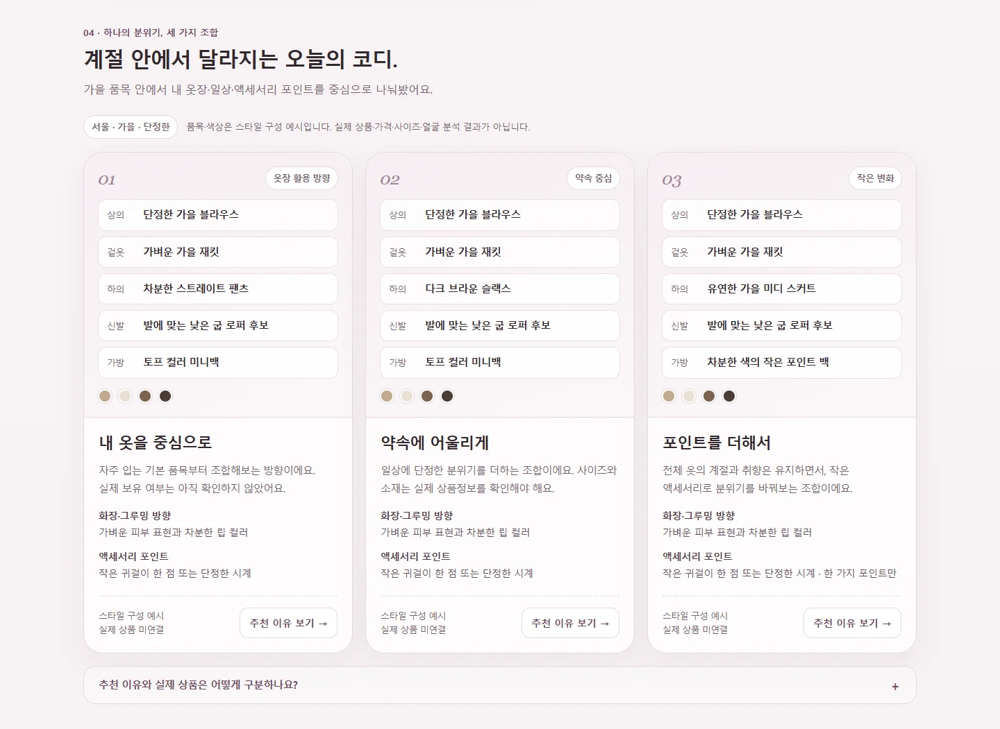
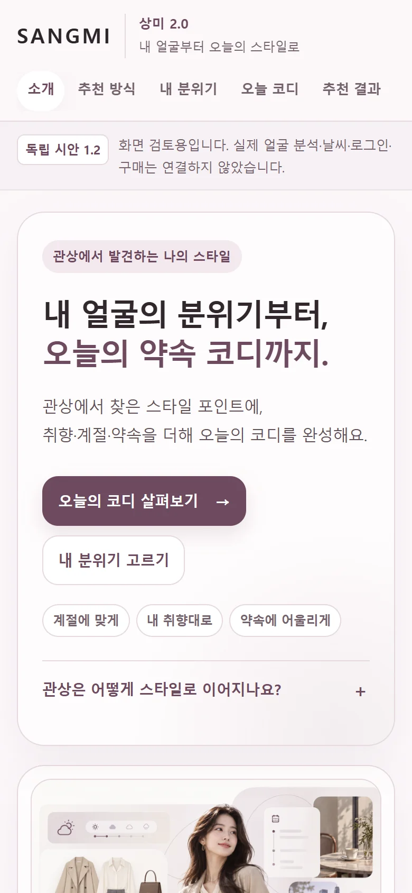

개인화 · 뷰티·스타일
상미
SANGMI
내 얼굴의 매력을 읽고, 나에게 맞는 스타일을 찾다.
사진 속 얼굴선과 분위기, 사용자가 선택한 피부 정보와 스타일 취향을 바탕으로 맞춤 뷰티·그루밍, 상품과 콘텐츠를 연결하는 서비스입니다.


위 화면은 2026년 9월 14일 기준 상미 정식 사이트 화면입니다. 모델과 사용 전·후 이미지는 가상 예시이며, 실제 이용자 사진이나 효과가 아닙니다.
핵심 기능
- 사진 품질 확인
- 얼굴선 기반 스타일 참고
- 사용자가 선택하는 피부·취향 정보
- K-FACE 스타일링 이야기
- 맞춤 뷰티·그루밍 추천
- 콘텐츠·상품 탐색
이용 흐름
- STEP 01사진 확인정면도·밝기·초점과 얼굴 윤곽을 기기에서 확인합니다.
- STEP 02내 정보 더하기피부 타입과 고민, 오늘 원하는 분위기는 사용자가 직접 선택합니다.
- STEP 03맞춤 결과K-FACE 이야기와 판매 상품, 실전 영상을 순서대로 보여줍니다.
우리가 지키는 원칙
의료 진단, 건강·성격·운명·재물 판단, 외모 등급 매기기, 성별·민감정보 추정 서비스가 아닙니다. K-FACE는 재미와 스타일링을 위한 얼굴선 이야기입니다. 서비스 페이지는 공개되어 있지만, 분석·상품·보상 기능은 기능별로 검증을 이어가고 있습니다. 사용 전·후 이미지는 가상 스타일링 미리보기 예시입니다.
상미의 확장 개발 · 개발 중
상미 스타일 버전
상미 스타일 버전
상미 2.0 · 토탈 스타일 (가제)
내 얼굴의 분위기부터, 오늘의 약속 코디까지. 얼굴에서 찾은 스타일 포인트에 취향·계절·약속을 더해 오늘의 코디를 완성하는 상미의 다음 단계를 개발하고 있습니다.

상미의 뷰티·그루밍 방향을 바탕으로, 계절에 맞는 옷과 내가 고른 분위기, 약속 상황을 함께 고려해 화장부터 오늘의 코디까지 한 흐름으로 연결합니다.
사진만으로 사람을 단정하기보다 사용자가 고른 취향과 편안함을 우선하고, 새로 사기 전에 이미 가진 옷을 더 잘 활용하도록 돕는 방향입니다.
시안에서 확인할 수 있는 화면




아직 실제로 연결하지 않은 것
실제 얼굴 분석 · 실시간 날씨·예보 · 자유 대화 해석 · 카카오 로그인·계정 저장 · 상품 검색·가격·재고 · 결제는 아직 연결하지 않았습니다.
사진 속 인물과 착장은 기존 상미의 가상 모델 이미지이며, 실제 판매 상품이나 이용자 사진이 아닙니다.
코디 품목·색상은 규칙 기반 구성 예시이고, 날씨는 사용자가 골라 보는 검토용 가정입니다.
사이즈·예산 입력은 참고 조건일 뿐, 실제 상품 치수나 가격 합계를 확인한 결과가 아닙니다.
사진 속 인물과 착장은 기존 상미의 가상 모델 이미지이며, 실제 판매 상품이나 이용자 사진이 아닙니다.
코디 품목·색상은 규칙 기반 구성 예시이고, 날씨는 사용자가 골라 보는 검토용 가정입니다.
사이즈·예산 입력은 참고 조건일 뿐, 실제 상품 치수나 가격 합계를 확인한 결과가 아닙니다.
개인정보·표현 기준
관상 표현은 화장·헤어·액세서리 같은 스타일 포인트로만 연결하며, 얼굴로 성격·운명·건강·신체 치수를 판단하지 않습니다.
현재 시안은 입력 정보를 외부로 보내거나 저장하지 않으며, 이후 운영 버전의 보안 정책은 별도로 안내합니다.